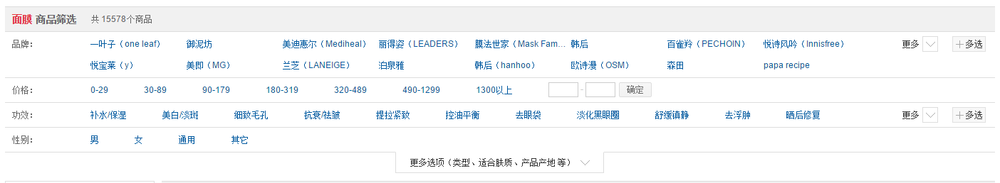

fiterMore是本人开源的第一框前端插件，基于bootstrap部分样式，旨在帮助开发者轻松实现现代化风格的筛选条件。参考某东，某宝的筛选条件。
在开发该插件前，本着拿来主义的精神，寻找了很多前端插件库，没有找到类似插件。只能自己动手，经过差不多一年的项目检验，足步完善，自认为已经比较成熟。 她尽可能地在以更少的代码展现更强健的功能，且格外注重性能的提升、易用和实用性。当然，这种“王婆卖瓜”的陈述听起来总是有点难以难受，因此你需要进一步了解她是否真的如你所愿。
| 初始化参数大全 | ||||
| 参数名 | 字符类型 | 释义说明 | 默认值 | 使用频率 |
|---|---|---|---|---|
| searchBoxs | Array | 筛选条件项,详情参见searchBoxs参数大全 | null | 必须 |
| search | function | 查询事件,回调函数参数paramList为筛选条件 | null | 常用 |
| expandRow | integer | 展开筛选条件行数 | 2 | 常用 |
| expandEvent | function | 展开更多条件触发事件 参数：state true表示展开 false 收缩 一般可用来改变表格高度 | null | 常用 |
| paramkey | string | 参数收集时返回值的Key | ValueList | 不常用 |
| paramCustomkey | string | 参数收集时自定义条件返回值的Key | CustomList | 不常用 |
| searchOnSelect | boolean | 点击选项时是否触发查询事件 | true | 不常用 |
| searchBoxs参数大全 | ||||
| 参数名 | 字符类型 | 释义说明 | 默认值 | 使用频率 |
|---|---|---|---|---|
| id | string | 筛选条件项id，在查询回调事件的参数时会用上 | 没传会使用1,2,3... | 必须 |
| title | string | 筛选条件显示标题 | null | 必须 |
| data | Array | 选项数据,数据格式[{value:'1',text:'语文'},{value:'2',text:'数学'}] | null | 必须 |
| isMultiple | boolean | 是否允许条件多选 | false | 常用 |
| type | string | 存在自定义日期区间时需设定 值可为 datetime(年月日时分秒) | date(年月日) | null | 常用 |
| defaults | Array | 默认选中值，为空则选中全部 | null | 常用 |
| custom | object | 自定义筛选,详情参见custom参数大全 | null | 常用 |
| valueField | string | 选项数据 键字段名称 | value | 不常用 |
| textField | string | 选项数据 值字段名称 | text | 不常用 |
| isShowAll | boolean | 是否显示选项中的全部 | true | 不常用 |
| custom参数大全 | ||||
| 参数名 | 字符类型 | 释义说明 | 默认值 | 使用频率 |
|---|---|---|---|---|
| isRange | boolean | 是否区间,用于控制自定义输入框个数 为false一个输入框 true两个输入框 | false | 非必须 |
| event | function | 点击确定按钮回调事件，函数体申明如下 function(start,end){} isRange为false时 start有值 end:undefined isRange为true时都有值 ,函数返回值为boolean类型 为false时不触发查询事件 | null | 常用 |
| 方法大全 | ||||
| 方法名 | 方法功能 | 参数 | 返回值 | 返回值说明 |
|---|---|---|---|---|
| getParamList | 获取搜索条件参数 | 无 | array[] | :[ {{"CustomList":["2016-09-01 00:00:00","2016-09-15 00:00:00"] //自定义区间值 ,"isMultiple":false,"id":"CreatedTimeOne"}, {"ValueList":["1"] //选中值,"isMultiple":false,"id":"CreatedTime"}, {"ValueList":["0","1"],"isMultiple":true,"id":"Status"}, {"ValueList":[],"isMultiple":false,"id":"Createor"} ] |
| searchFunctionCall | searchBox对外提供的调用函数 | {"setValue":[]} key为要调用的函数名称 value:为函数调用参数 | 依据具体函数定 | setValue函数为赋值函数 调用如下 $(".searchbox").searchFunctionCall({setValue:[{"ValueList":["1"],"id":"CreatedTime"}]}) getParamList函数为取值函数 调用如下 $(".searchbox").searchFunctionCall({getParamList:null}) |
【初始化参数】
var options = {
//查询条件
"searchBoxs": [
{
"id": "Status_Default",
"title": "任务状态",
"isMultiple":true,
"data": [
{ "value": "0", "text": "运行" },
{ "value": "1", "text": "停止" }
]
}
]
};
【初始化参数】
var options = {
//查询条件
"searchBoxs": [
{
"id": "Task_CustomData",
"title": "任务集合",
"data": [
{ "taskId": "1", "taskName": "代理ip爬虫任务" },
{ "taskId": "2", "taskName": "日志清理任务" }
]
}
]
};
【调用代码】
$("#btn_getParamList").on("click",function () {
console.log($("#functionCall_searchbox").searchFunctionCall({'getParamList':null}));
console.log($("#functionCall_searchbox").getParamList();
});
$("#btn_setValue").on("click",function () {
$("#functionCall_searchbox").searchFunctionCall({'setValue':[
{"ValueList":["1","2"],"id":"Task_Function"},
{"CustomList":["2016-01-01","2016-02-24"],"id":"CreatedTime_Function"}
]});
});
焰尾迭是一个笔名，09年就开始在用了。12年毕业于武汉某高校，在武汉工作至今，转眼已经四年多了。坦诚而言，我的职业生涯谈不上多么靓丽，很大的一个重点可能是在于，我本身的惰性。一段时间不动手写写东西就会 偷懒，所以此次耐心写完此篇，只希望能向大牛更进一步。
第一次在github上写帮助页面，慢慢摸索了很久，才搞清楚怎么玩。只希望把帮助文档写的详细些，各种参数的使用方式都介绍清楚。不足之处还望见谅！
博客园地址:http://yanweidie.cnblogs.com 插件GitHub地址:https://github.com/CrazyJson/filterMore
如果你认为该插件帮助到了您， 不妨扫描上面二维码， 帮助一下我， 有了您的资助， 将提供更加优质的资源。